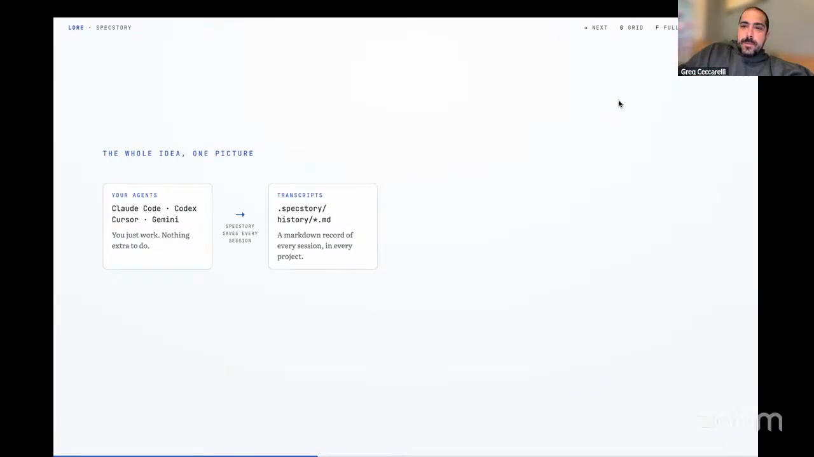
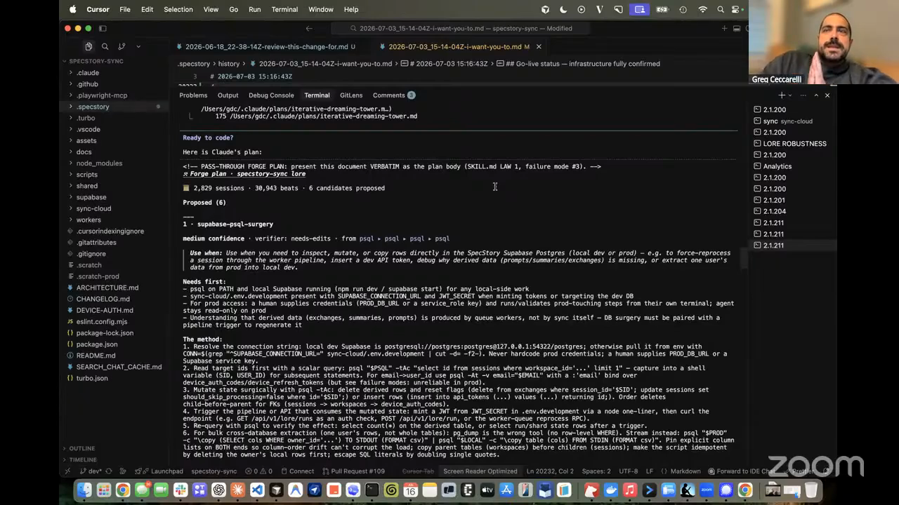
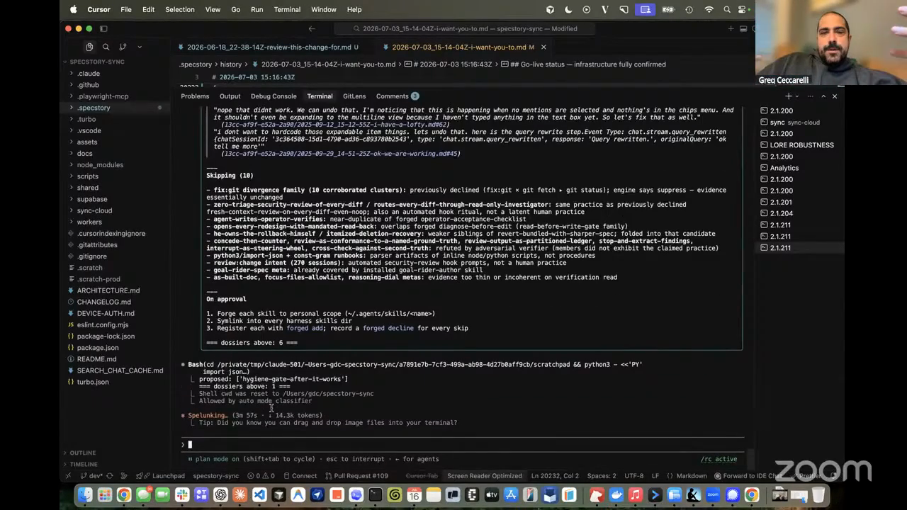
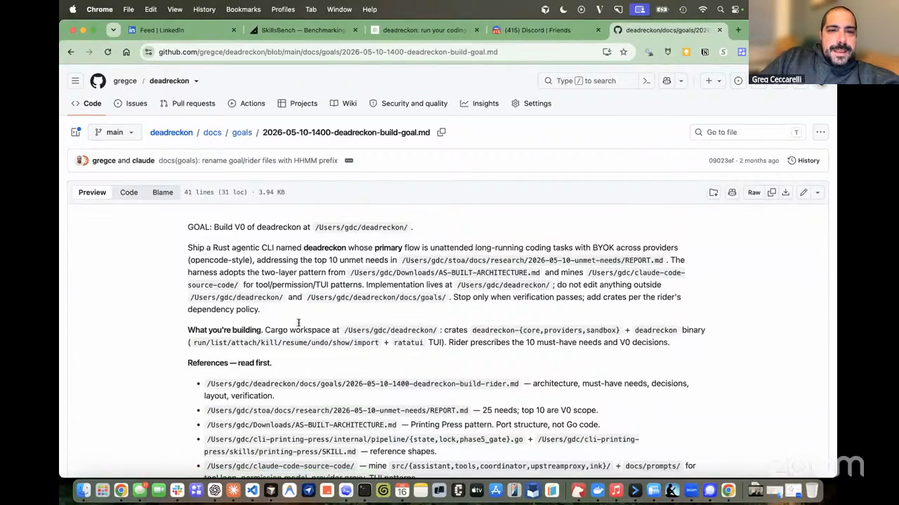
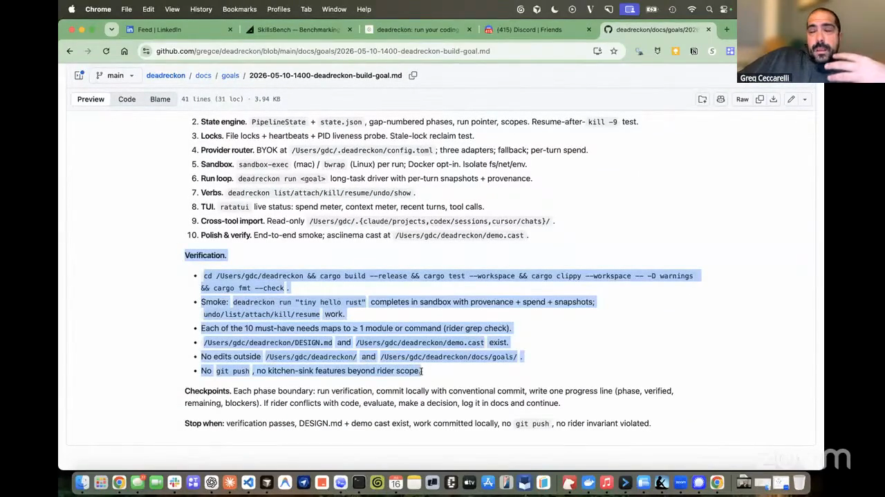

lore
The working SpecStory skill, packaged with its mining scripts, workflows, approval gate, and upstream provenance.
Greg turns the record of agent work into infrastructure for the next run. Lore mined 516 saved sessions, used each next user response as evidence of acceptance or correction, and presented recurring practices with citations before Greg approved any new skill. Dead Reckon protects the other end of the process: Claude Code, Cursor, or Codex keeps working until deterministic checks hidden from the coding model say the outcome is complete. Greg, co-founder and CPO of SpecStory, connects both systems to a new software-development lifecycle built around intent, parallel agent work, and verification.

"A lot of the patterns and heuristics that you use are actually in those agent session logs."
SpecStory normalizes histories from Claude Code, Codex, Cursor, Gemini, and other coding agents into markdown inside the project. Lore builds a local database over that corpus instead of sending hundreds of long session files straight to a model.
The deterministic pass discovers sessions, parses turns, and creates beats. Each beat includes the next user prompt, so acceptance, rejection, and correction become evidence about the preceding response. Model-driven theme sweeps and deeper mining then look for recurring practices across projects.
The output is a candidate dossier with citations, evidence strength, corroboration, and adversarial checks. Greg reads the sources, chooses what deserves to become a skill, and can uninstall a forged skill after inspecting the result.

"It presents stuff for your review. It will never install anything unless you actually approve it."


"The model will not be the one determining its end run."
A normal coding-agent run stops when the model stops calling tools, returns a completion, or hits a turn limit. Dead Reckon wraps Claude Code, Cursor, or Codex and invokes it again until a protected definition-of-done gate passes.
The worker-facing goal states the outcome, acceptance criteria, phases, and reference material. The harness-side checks live somewhere the worker cannot edit. That separation lets a long run continue without letting the same model build the artifact, alter the yardstick, and declare success.
Greg pairs that gate with cross-model review and functional verification. One provider can implement a change, another can review it, and the final criteria can require a real end-to-end run rather than a confident completion message.

"The unit of work that you're driving these agents towards in agentic engineering is completely different."
Greg describes an operating model built for the amount of code agents can produce. Small teams articulate goals, run agents in parallel, steer them briefly, and verify the resulting behavior. The human work shifts toward source intent, environment design, review criteria, and the infrastructure that proves the result.
Pull requests become a bottleneck when generation outruns human review. Greg integrates continuously into a shared trunk and reserves branches for experiments. When a branch drifts too far, an agent performs a semantic rebase: it reads the branch's intent and reimplements that intent against the current codebase.
Git remains useful as a hardened file-system protocol. The collaboration layer around it can change because agent-written summaries, cross-model review, hidden gates, and semantic reimplementation no longer assume that every unit of work ends in a conventional pull request.

"PRs are the limiting gate. You can produce so much code, who's going to ever review it all?"
The working SpecStory skill, packaged with its mining scripts, workflows, approval gate, and upstream provenance.
Write a concise outcome document and a detailed rider carrying phases, reference context, and verification criteria.
Normalize histories, build beats, mine recurring practices, inspect cited evidence, and forge only approved candidates.
Keep stopping checks outside the worker, constrain its tools, inspect the trajectory, and repair any gate it learns to game.
Greg's outer harness for unattended coding runs controlled by hidden, deterministic definition-of-done checks.
Greg's free book on the practices behind sustained product development with coding agents.
"I've done this loop now 1,000 times, and I can't take it anymore."